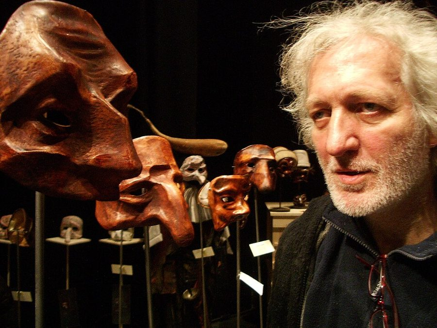
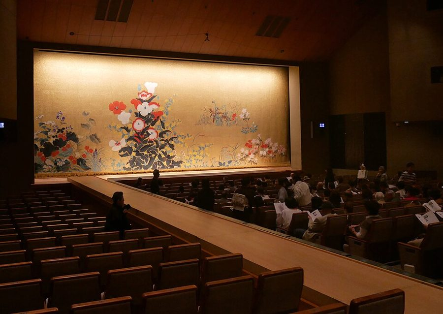

turn a Mask off
… the act of bending down may turn a new Mask off …
译本：「弯腰的动作可能会让新面具出戏」
弯一下腰，就可能让新面具「关掉」
turn off / turn on 是作者的课堂行话，像开关一盏灯。这一节它反复出现，中文各处的译法不一样，说的都是同一件事。
前两页讲面具从哪来、出神是怎么回事。这一页是全书唯一一节把面具课从头到尾摆出来的实录：桌上放什么，老师怎么开口，镜子怎么举，面具为什么要上「语言课」，后面还附了三位学生写的感受。好看在细节：一个专爱拿棍子打人的面具，一个能把动作「传」给新人的面具，一个赤脚站进雪地的学生。读的时候抓两条线：作者怎样一步步挡住学生脑子里的话，以及他要学生分清的那两种感觉。

上一页（§5–§7）是作者的出神理论：人格靠肌肉、脑子里的话和别人的目光撑着；不必为自己负责，又遇上一个你愿意服从的高地位者，人就容易出神；附身仪式里的神像孩子。这一页把那套理论搬进教室，几乎每个操作都能对上前一页的某个机制。下一页从 §9 起细看一个叫「流浪儿」的面具，算是这里方法的完整案例；面具课有什么风险，作者留到 §14「危险」专门谈。
作者说面具「不是真的危险」，同一节里却写了打人、拔花、梦游、赤脚站雪地。他的课有老师盯着、随时喊停。这一节是给老师的操作记录，不是在家自学的教程。
要让一个人「变成」镜子里那张脸，老师到底做了哪些事？
读的时候带着这几个问题。不用先找答案，读完回来对照「检查一下理解」。
这一节照着一堂课的时间顺序走，比前两页好跟。先是布置（道具桌、屏风后的旧衣服），然后老师换上高地位、宣布规矩，插进几个讲给学生听的故事。接着是最细的一段：怎么举镜子，学生会怎样躲开变化，老师怎样一一挡回去。然后时间跳到很多节课以后：面具像婴儿，要上语言课，顺带说到卓别林。中间突然插进三位学生的自述和几则意外，读来像换了人在说话。最后回到老师的眼睛：两种感觉的区分，再从面具的孩子气扯到公交车上的大人和有智力障碍的孩子，收在「几乎人人都能学」。
作者落在哪：面具课的功夫不在让学生感到「另一个人」（照镜子时几乎人人都被震一下），而在挡住学生自己去「做」那个变化；新面具要像婴儿一样从头学；学生要学会分辨「我在操纵面具」和「面具在操纵我」，并把后一种延长。
这一页是原书和译本「面具与催眠」一篇的第 8 节。粗体是本站给的节名，下面是译本的节号和小标题、这一节在译本电子书中开头的几个字（搜它就能跳过去），再下面是英文原文的开头。每节标了档：「先读」是这本书最精彩、不读就错过的，「有空」好看但跳过不丢线。读完打个勾。
先把这一页用到、作者默认你懂的几个概念讲一遍。讲的是概念本身，作者拿它推出什么，读原书时自己看。前两页讲过的面具（大写的 Mask）、出神、人格、退行，这里直接用。
很多人醒着的时候，脑子里有个声音一直在说：「这个会还有半小时」「她刚才那句是什么意思」。心理学叫它内部言语（inner speech）。作者说的 verbalisation 就是这种用词句在心里叙述、评论、打算的活动。
作者的用法更进一步，这是他自己的看法：他认为「正常的意识」就是这种自言自语在当班，把它挡住，人就容易滑进出神。挡的办法很日常：嘴里一直哼一个音，反复念同一个词，或者做快得来不及想的动作（打乒乓球）。可以试试一边出声数「一、一、一」，一边在心里默念一句完整的话，会发现两件事很难同时做好。后来的研究对「人人脑子里都在说话」打了折扣，见「今天怎么看」。
在这一页：老师要学生嘴形固定、一直发声、「脑子里别有词」，都是在挡它；作者说学生一开始「想」，面具就被自己接管了。
作者说面具状态不是戴上就有、摘下才没，它会在几秒之内亮起、熄灭，像接触不良的灯。弯一下腰、走几步、老师靠得太近、手碰到桌子，都可能让它「关掉」；再看一眼镜子，它又「充上电」。这几个是作者的课堂行话，译本没有统一的译法，有时作译本：「出戏」，有时作译本：「掉线」，本站统一叫「激活」和「关掉」。
日常里最像的是写代码「进入状态」：同事拍一下肩膀，状态就断了，得盯着屏幕看一会儿才接得上。
在这一页：道具放在桌上免得弯腰，镜子离桌不到八英尺，场边备着镜子，这些安排大多是为了少关掉、快充电。
这是这一节要教会学生的区分。一种是学生在「演」面具：心里先想好这个角色该怎样，再让身体照着做，像拉提线木偶；另一种是面具在「带」学生：动作自己冒出来，学生只觉得「就该这样」，没有在做决定。作者说两种状态其实差得很远，可多数学生对自己意识的变化不敏感，分不出来，所以要老师在旁边看准、点破。
日常里相近的对照：照着稿子念的发言，和聊开了以后的发言；刻意挤出来的笑，和被逗笑。它和心理学的心流（flow）有点像，但作者强调的是「不是我在做」的那种感觉，比心流走得更远，也更难检验。
在这一页：§8 后半作者把它列成两条，前一种不要，后一种要学会维持；面具课的其余安排都在为这一步服务。
作者在课上用过、照着就能玩的；个别几张是本站照书里的段落改的，卡里写明了来历。几个人、怎么玩、看什么写在卡片上；「先猜」那一栏是书里的课堂上发生了什么，先自己猜，或者先玩一次，再点开。全书的游戏卡汇总在游戏汇总。
译本：「面具入门课」
作者说初学的课常有一段「死掉的」二十分钟，这还算运气好。他的办法是先往班里放进一个已经练成的面具：只要有一个人「附身」了，其他人往往几乎马上跟上，又害怕又安心。他还说，越安慰学生不危险，学生越紧张，到拿面具时不少人在发抖；他要的就是兴趣和不安之间那个平衡。
作者自己说面具要谨慎对待，理由不是它真有多危险，而是一次糟糕的经历可能让老师或学生从此不碰；风险他在 §14 专门谈（见05f），那里他说，真会伤到人的时候，是大家以为老师在管、老师其实分了神。本站的提醒：这一节里就有打人、拔花后难过、梦游、赤脚站雪地的例子。这类练习要有经验的老师带，有人随时能喊停；不要一个人对着镜子戴面具做。
作者说看的人被吓得更厉害，屋里的气氛一下被「打」了起来，他拿伏都教仪式里连敲几个钟头的鼓作比。他还常在学生照镜子之前就说「太棒了」「这是谁？」，让「我变了、我藏起来了」的感觉更强。
译本：「语言课」
作者说五分钟里有三个像词的声音他就很高兴，因为嘴形固定着，很多词起初发不出来。别人当老师常忍不住「欺负」面具：碰它，拿礼物要挟它开口，一说出词就拼命纠音，面具就难受、不合作。他说最好的老师是一个已经会说话的面具。离开两年再回来的学生，面具用的还是当年学会的那些词。
和入门课一样，要有经验的老师带，镜子和「摘下面具」的规矩都不能省。
译本：「“马拉松”场景」
他说最大的改进，是想到在演的过程中就让人拿着镜子站在旁边：面具演员一回到自己，就打个响指，两三面镜子朝他冲过来，学起来容易多了。面具口袋里也可以揣一面小镜子，自己把自己重新打开。到了这一步，面具成了能让观众看得开心的表演者。
同上：要有经验的老师带。这是练了好些节课以后的事，不是入门练习。
按在书里出现的顺序排，标题前是节号。只讲到读懂这一页需要的程度。
作者讲给学生听的第一个故事里，借走那个打人面具的是 Pauline Melville，她接手了作者在莫利学院（Morley College，伦敦一所面向成年人的老牌夜校）的课。她早年当演员，后来成了作家：1997 年的第一部长篇《腹语者的故事》（The Ventriloquist’s Tale）获得惠特布雷德首部小说奖。她在书里只是一个没被提醒的同行，故事的要点是：这个面具只有在老师知道它的脾气、及时喊停时才安全。

歌舞伎是 17 世纪初兴起的日本传统戏剧，以浓重的脸部化妆和夸张的亮相出名。花道是一条和舞台齐高、从观众席中间穿过去的长台，演员从这里上下场，常在上面停下来亮相，就在观众身边。作者说他见过三个和打人面具很像的耷拉鼻子的面具站在花道上，手里拿着棍子吓唬观众。他没说是哪一出戏，本站也查不到。
作者注里引了他的一段话：恶魔岛上只有很小的剃须镜，他觉得镜子的大小对认出自己至关重要，大镜子能照到头和全身，小镜子只照到脸。作者拿这一条撑他的做法：面具课只用和头一样大的镜子，镜子一大，学生看见全身，就要开始摆姿势了。
《摩登时代》（Modern Times，1936）是卓别林的流浪汉「查理」最后一次在银幕上出现，也是观众第一次听见卓别林的声音：查理在餐馆里登台唱歌，写着歌词的袖口飞掉了，他只好照着法国流行曲《我在找蒂蒂娜》的调子，用一串听着像法语、意大利语的乱语唱完。作者由此猜（他说的是 I think、probably）：卓别林知道查理一开口就像他本人，这大概是他放弃这个角色的原因；要是上过面具课，几乎肯定能找到一个声音。这是作者的推测，不是卓别林的说法。
作者借霍尔特说：一个心智年龄只有几岁的大孩子，不被允许像几岁那样表现，又做不到像他的年龄那样，只好摆出一副呆相当保护色；舍伯恩让这些孩子自由活动时，那层呆相就掉了。原书用的 retarded children 是 1970 年代的说法，今天叫智力障碍儿童。
歌德（Goethe，1749–1832）1786 至 1788 年游历意大利，在罗马看过狂欢节，后来写进《意大利游记》。作者注里抄了他好几段：戴面具的人在大街上可以对路人做平时绝不许做的事，揪住人数落、拦住马车、马车没有一辆躲得过，穿黑袍的修道院院长被石膏粉砸得满身白点，而面具受巡警保护，谁也碰不得。作者把这条注挂在正文这句话上：面具放进人群，就被许可做平时立刻会被禁止的事；注的开头说，他要看的是人群怎样放大面具的行为。
读译本时值得翻一下原文的地方：双关、行话、口语，和译本传不出的语气。灰色斜体是原文里的一小段，在英文电子书里搜它就能找到；方框里是译本这一句的译法。译错的放在下一节「译本勘误」。
对着译本读这一节时，下面这些地方会把人读歪。方框里是译本的原句，在译本电子书里搜它就能找到；灰色斜体是英文原文那一处。只收意思错了、反了、漏了的，措辞上的出入不收。全书的勘误汇总在译本勘误。
… I illustrate this with stories …
译本：「让我用几个故事来说明这一点」
原文是说：为了让学生相信面具里做的事不算自己的账，他在课上给学生讲故事。紧接着的打人面具、帕克斯先生，从上下文看就是这类讲给学生听的故事，是教学的一部分；译本读来像作者转身对读者举例。
… I pointed to the Mask that …
译本：「但我说过面具会打人」
原文括号里是一个动作：作者指了指那个打人的面具。译本成了「但我说过面具会打人」，和前一句「怪我没提前警告她」自相矛盾。同段前面「只要老师在紧要关头喊」之前，原文还有「老师知道它这脾气」，这正是故事的要点。
… It really makes no sense that …
译本：「佩戴者的说法毫无意义」
原文：面具竟然能把这种信息传给戴它的人，这真说不通。作者刚讲完帕克斯先生的一套动作在汉普郡课上原样重现，他是在说「没道理，可它发生了」。译本读成「认为面具会传递特质的说法毫无意义」，像是在否认这件事。
… begin to observe for themselves the …
译本：「行为发生的方式观察自己」
for themselves 是「亲眼」：学生自己亲眼看到面具会逼出某些行为，比如紧接着那个例子里，同一个新面具让两个人先后变出同一个驼背的怪物，他们才真觉得有「灵」在。译本写成「观察自己」，意思偏了。
… remove the Mask, visibly shaken, and …
译本：「告诉他们“什么都没发生”」
原文是学生的反应：有的学生僵住，自己摘下面具，明显在发抖，嘴上却说「什么也没发生」。这是在否认刚才的变化，和前面摸面具一样是一种防御。译本写成老师让他们摘下、再告诉他们没事，主语和意思都变了。
… any words in your head …
译本：「你脑子里什么也别想」
原文是「脑子里别有任何词」，不是笼统的「什么也别想」。作者要挡的正是脑子里的话：学生一用词句去想该怎么演，就会蹦成拳击手、摆出丑角的架势。下一段让面具一直发声，也是为了挡住词。
… minutes before the first Mask appears …
译本：「但你得足够幸运，才能遇到这第一个面具」
原文：第一个面具出来之前，通常有二十分钟「死掉」的时间，这还得是运气好的时候。意思是可能比二十分钟更久，不是说要靠运气才遇得到第一个面具。
… but instantly she removes it …
译本：「但这光彩转瞬即逝」
原文是女孩一变样，就立刻把面具摘了。下面老师说「对面具温柔些」、她说「感觉不对」，接的都是这个动作；译本写成光彩自己消失，读者会以为是面具熄了。
… see that no one is coming …
译本：「确认没有人来伤害她」
come to harm 是「受到伤害」。作者让她在一旁看别人戴面具，亲眼看到谁也没出事，好放下心来；不是确认没人会来伤害她。
… wearing a particularly regressive Mask …
译本：「格外衰老的面具」
regressive 是心理学的退行，指退回更幼小的状态。这个面具格外像小婴儿，所以学生怕自己尿裤子，每次戴前先去厕所。译本「衰老」把方向弄反了，读者容易想成老人。
… all an actor can produce …
译本：「除非它们都是演员能表现出来的」
原文：「肌肉发达」的怪物面具他不鼓励，除非演员只弄得出这一种。紧接着他说最要紧的是演员召出某种「灵」，哪怕是怪物也比没有强；译本读来像在讲演员演不演得出来。
… someone to stay close to it …
译本：「然后找个人拿着镜子待在道具旁」
it 指面具：找一个人拿着镜子守在面具旁边，面具一要「关掉」，马上就能给它照一下。译本写成待在道具旁，和后面「从镜子那儿充电」接不上。
… probably why he abandoned the character …
译本：「这也许正是他弃用这个特征的原因」
the character 是流浪汉「查理」这个角色。作者猜卓别林正因为找不到合适的声音，才放弃了流浪汉；译本「弃用这个特征」读不出放弃的是整个角色。下一句的「肯定」，原文是 almost certainly（几乎肯定）。
… in rapport with all the other occasions …
译本：「催眠状态之间都颇为融洽」
原文：据说被催眠的人每次出神，都和以往每一次出神「接得上」，记得那些时候的事；面具角色也一样，所以面具记得自己学过哪些词、没学过哪些。译本「颇为融洽」看不出说的是记忆。
… and objects became possessions …
译本：「同学们都被附了身」
possession 既是「所有物」也是「附身」，这一篇用的多是后一个意思，这里是个双关，学生说的是前一个：东西一下子都成了「我的」。原文没有提同学。译本成了同学们都被附身，意思全变了。
… Something happens to my eyes …
译本：「我的眼睛看到了万物」
原文只是说「我的眼睛起了某种变化」，说不清是什么；前后几句讲颜色更亮、触觉更灵。译本「看到了万物」把一句含糊的体验说成了神秘的顿悟。
… a sense of failure during a …
译本：「失败感贯穿整堂面具课」
原文是在列举会伤到面具的事：被打，看见别人摘面具，在面具课上有一阵失败感。译本写成失败感贯穿整堂课，好像这位学生的面具课一直很挫败；其实下文这位学生说面具训练让自己更有信心。
… my first successful speech lesson …
译本：「当我第一次成功地在面具课上找到感觉时」
speech lesson 就是上文的语言课：这位学生说的是第一次语言课上成了，所以接着讲「我知道词怎么说，面具却不会」。译本写成「在面具课上找到感觉」，和下文对不上。
… It becomes possible to say …
译本：「他们有可能是这样的」
原文：学生开始在两种状态之间来回切换以后，老师就能对他说「你碰到桌子时面具关了」「看到另一个面具时它亮了一下」。这是老师教学的抓手；译本读来像在描述学生是什么样子。
… the personality conceals or checks impulses …
译本：「人性会隐藏或抑制冲动」
personality 是这一篇的术语人格，作者说它像心灵的公关部，平时替我们挡住冲动。译本这里作「人性」，容易读成人的天性，正好和面具「放出天性」的意思缠在一起。
… an advocate pushes through the crowd …
译本：「一位鼓动者像在法庭上一样慷慨陈词」
advocate 在这里是律师：狂欢节上有人扮成律师，揪住路人要告他，数落（rates）女人风流，念人家的欠债。「鼓动者」不对，「打分」也是把 rates 看错了。同一条注里的 quakers 也不是 §3 说的贵格会信徒，而是罗马狂欢节上一种传统的面具角色（意大利语 Quacqueri），歌德那本《罗马狂欢节》的插图里就画着他们。
(1) the student working the Mask, which we don’t want; (2) the Mask working the student, a state which the student learns to sustain.— §8。本站译：（一）学生操纵面具，这是我们不要的；（二）面具操纵学生，这是学生要学会维持的状态。
全节最像定义的一句，口气干脆，像在黑板上写两条。关键是同一个动词 working 换了主语：英文只把「学生」和「面具」对调，意思就翻过来了。译本：「操纵面具的学生」这样译，意思对，对仗弱了些。容易误读成「面具真有自己的意志」：作者说的是学生的感觉，他前文给「灵」都加了引号。
…should be approached with caution, not because they’re really dangerous, but because a bad experience may put a teacher or student off for good.— §8。本站译：……对面具要小心，不是因为它们真有危险，而是怕一回不好的经历，就让老师或学生从此再也不碰。
这句是作者在讲完梦游、赤脚站雪地之后说的，口气在往轻里收：他担心的不是出事，而是把人吓跑。关键词是 really，他承认有风险的样子，但不认为是真危险。读的时候留意这层态度，他在 §14 会展开；本站的看法在「本站怎么看」。
读完这一页的这一节再看。下面是作者在这一节里的主张，由本站按主张重新组织，不按原书的顺序；每条后面是节号，拿不准就回书里那一节再读一遍。
作者开课前变得安静、严肃，反复保证面具不危险，规矩只有一条：叫摘就摘。他承认越保证学生越紧张，技巧在于拿捏兴趣和不安的平衡。他还用故事让学生相信面具里的行为不算自己的；道具挑两岁半孩子会感兴趣的。
§8他说几乎人人照镜子都被自己的映像震一下，难处在于学生会自己动手去「变」。所以镜子只给两秒、只照脸，嘴形固定，一直发声，脑子里别有词，马上去找道具；学生摸面具，他说是防御；僵住了摘下面具说「什么也没发生」、先想好再演，也都把变化挡掉了。
§8作者说大多数情况下最好的面具一开始知道得最少，要学坐、学拿东西，还要上语言课；「做不来」的演员总是替面具把事做了，面具的感觉就漏掉了。教的人要耐心，不能欺负它。他说面具记得自己学过什么，他拿被催眠者的报告作比。
§8面具起作用时，学生觉得不由自主，老师看到忽然「自然」了。多数学生在两种状态之间来回切换，自己却察觉不到，老师要看准那一刻说出来；一旦学生懂了区别，状态就能延长。场边随时递镜子，是他说的最大改进。
§8作者认为成不成部分看老师的本事和学生有没有非成不可的理由：他早年以为十个里只有一个能「成为面具」，后来排面具戏，演员非成不可，人人都在某种程度上做到了。他说大人的木讷是被压出来的，面具正相反。
§8合起来：作者交给面具老师的是一份操作手册：用地位、免责、镜子和道具把人推进去，用挡住词句让变化不被学生自己接管，再教学生认出「面具在带我」那种感觉。
这本书 1979 年出版。下面挑出这一页里能被后来的研究检验的说法，分「书里 / 当时 / 今天」三栏，并给一个结论。结论判的是标题里「书里的说法：」后面那一句。全书的这一节汇总在今天怎么看。
读完作者的主张，再看它站不站得住。每一块摆出三样：主流怎么看，作者怎么看，本站的评论。最后一句是本站对这一页的总体判断。
主流看法：催眠研究里的社会认知一派（以 Spanos 为代表）认为，暗示起作用很大程度靠期待、角色和情境：事先被告知会发生什么，看见别人发生了，有一个权威的人在场；另一派更看重稳定的个人差别（见上面「今天怎么看」第 3 张），但也不否认情境有作用。去个体化的研究也发现，匿名会让人更跟着现场的规范走。
作者的看法：演高、讲免责的故事、学生照镜子前就说「太棒了」、先放进一个练成的面具，都是他有意用的手段；他说技巧在于兴趣和不安的平衡。§8
本站的评论：这一节好看在作者不藏：怎样让人更紧张、更容易「变」，每一步都写了出来，几乎能一条条对上期待、权威、从众和挡住语言。读的时候把「灵」「附身」当成作者对体验的描述（他自己也给这些词加了引号），机制当成可以讨论的东西。这既解释了它为什么灵，也说明为什么需要一个懂行又克制的老师：同一套手段用得不好，就是操纵。
主流看法：戏剧治疗把演完之后「出角色」（de-roling）当成常规步骤：要有办法让人从角色里回到自己。2017 年《戏剧治疗评论》上的一篇综述，归纳了它的几种用处，比如从扮演里过渡出来、放下角色带来的负面感受、划清角色和自己的界限。
作者的看法：面具要谨慎，不是因为真危险，而是一次坏经历会让人从此不碰；打人的面具只要老师知道它的脾气、及时喊停，就很安全。§8
本站的评论：作者说对了一半。他的课堂规矩清楚、老师盯着，书里出事的，有没被提醒的同行，有一个人在家的学生，也有在他课上冲进花园拔花、事后难过的瑞典教师。但同一节里有人事后难过，有人梦游，有人赤脚站在零下二十度的雪地里，最后这件真可能冻伤。本站把这句话读成：在有经验的老师手里不算危险。他那条「叫摘就摘」和场边备镜子，相当于一套进出角色的程序。作者在 §14 还说过，老师不在场时面具反而最安全，因为演员会自己管住自己；他说的是课堂上的演员，一个人在家对着镜子，本站不放在这句话的范围里。
本站的总体看法：这一页值得带走的是一份少见的教学实录：怎样用环境、口令和老师的地位让人放开，怎样分辨「我在演」和「它在带我」。作者对机制的解释（挡住词句、交出责任）有后来研究的影子；「灵」「附身」当体验的说法读，「不危险」那句只在有老师的课堂里成立。
先在心里答，再点开。答错的那题，回书里把对应那一节再读一遍。
雨伞、闹钟会让面具去「想」怎么打开、怎么上弦；作者只放两岁半的孩子会感兴趣的东西。放在桌上，是因为弯腰这个动作就可能让新面具关掉。
他说需要的信息来自脸；镜子大了会照见全身，学生就开始摆姿势。他要学生体验成为另一个生物，而不是去想怎么成为它。
他说这是防御，学生想确认这「只是个面具」。学生真害怕时，他会让他们交叉手指之类；接受了这种保平安的办法，就已经进了「魔法世界」，等他们同意松开，面具的效果反而更强。
他们不肯让面具真的笨、真的什么都不懂，急着把自己的本事直接给面具：面具还在研究一把收着的伞，他们就替它撑开；面具不会坐，他们就硬让它坐下。面具的感觉就漏掉了，只剩演员在假装。
他们想「欺负」面具：碰它，拿礼物要挟它开口，一说出词就拼命纠音，面具受了委屈就不合作。作者说最好让一个已经会说话的面具来当老师。
学生操纵面具（不要），和面具操纵学生（要学会维持）。多数学生察觉不到自己意识的变化，老师要看准变化发生的那一刻并说出来，比如「你碰到桌子时面具关了」。
这些少年平时觉得戏剧太娘气，面具课却让人觉得危险，所以吸引他们。作者说他见过相当暴力的少年做出很出色、很细腻的面具表演。
用一句话说这一页：
想一想：你在什么时候最像「被面具带着走」：打球、写代码写到忘了时间、和老朋友胡闹？那时有没有一个人或一件小事（一句「你在干嘛」、一个电话）一下子把你「关掉」？
读过又忘了，从这里想起来。挑的是这一页最值得记住的故事、游戏和说法，不按原书顺序；每条后面是节号，想细看就回书里那一节。全书各页的这一节都收在全书回顾。
一句话：面具课难的不是让人感到另一个自己，而是别让自己去「做」它：学生要学会分辨，是我在操纵面具，还是面具在操纵我。
一个红脸、耷拉鼻子的面具爱捡棍子打人；老师知道它的脾气、及时喊「摘下面具」就没事。借走它的同行没被提醒，第二天来说有人胳膊挨了一下。
§8一个爱笑、望天花板、坐在椅子最边上的面具，被带到另一地的课上，戴上它的人做出了一模一样的样子。作者说这简直说不通。
§8镜子从下往上切到眼前，只给看两秒就侧身让开，人顺势转向道具桌。镜子只有头那么大，免得照见全身开始摆姿势。
§8新面具像婴儿，从「坐」「站」「气球」学起。五分钟有三个像词的声音就算成功；离开两年回来的学生，面具还记得原来那些词。
§8「我在操纵面具」不要，「面具在操纵我」要学会维持。老师的功夫是看准开关的那一刻，告诉学生「你碰到桌子时它关了」。
§8一个加拿大学生在家试面具，等发觉时已经赤脚站在零下二十度的雪里。作者说面具要谨慎，不是因为真危险，而是坏经历会让人从此不碰。
§8